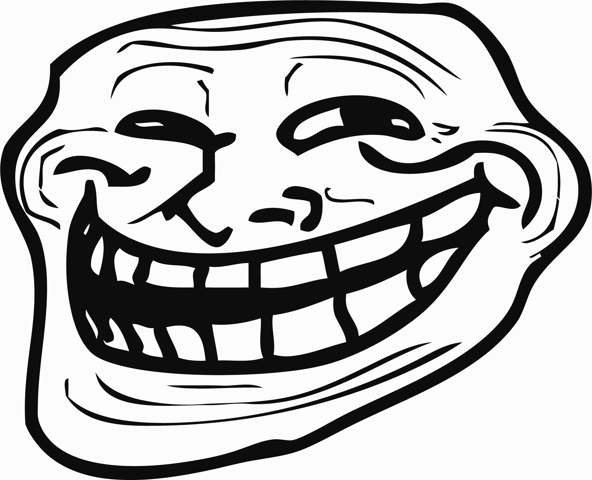

<!DOCTYPE html>
<html>
  <head>
    <script src='http://maps.googleapis.com/maps/api/js?v=3.16' type='text/javascript'></script>
    <script src='jquery-ui-1.11.0.custom/external/jquery/jquery.js' type='text/javascript'></script>
    <link href='jquery-ui-1.11.0.custom/jquery-ui.css' rel='stylesheet'>
    <script src='jquery-ui-1.11.0.custom/jquery-ui.js' type='text/javascript'></script>
    <link href='jquery-ui-rotatable/jquery.ui.rotatable.css' rel='stylesheet'>
    <script src='jquery-ui-rotatable/jquery.ui.rotatable.js' type='text/javascript'></script>
    <script src='webonise-gmaps-mutobj.js' type='text/javascript'></script>
    <style>
      html, body, #map-canvas {
        height: 100%;
        margin: 0px;
        padding: 0px
      }
      
      #marker {
        border: 2px solid red;
        background: silver;
      }
    </style>
    <script>
      google.maps.event.addDomListener(window, 'load', function() {
        var weboniseOffice = new google.maps.LatLng(35.892047, -78.755325);
        var mutableObjectPosition = weboniseOffice;
      
        var mapOptions = {
          zoom: 19,
          center: weboniseOffice,
          mapTypeId: google.maps.MapTypeId.SATELLITE
        };
      
        console.log("Creating map centered at " + weboniseOffice.toString());
        var map = new google.maps.Map(document.getElementById('map-canvas'), mapOptions);
        console.log("Created map; now creating mutable object at " + mutableObjectPosition.toString());
        var mutableObject = new webonise.gmaps.MutableObject(
          map,
          $('</img>'),
          mutableObjectPosition,
          function(coordinates) {
            console.debug("Updating the coordinates of the mutable object");
            console.dir(coordinates);
          }
        );
        console.log("Created mutable object; done!");
      });
    </script>
  </head>
  <body>
    <div id='map-canvas'></div>
  </body>
</html>
